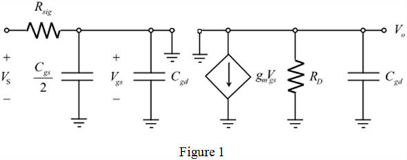

Step 1:
Refer to Figure P9.105 in the textbook for a common drain-common gate amplifier.
It is a source follower circuit placed between the signal source and the input of the common source amplifier.
Refer to Figure 9.42 in the textbook for the equivalent circuit of the common collector-common base amplifier.
Eliminate resistance, replace the capacitances, related to bipolar junction transistor with  related to field effect transistor respectively, and also replace the voltage, with
related to field effect transistor respectively, and also replace the voltage, with  from common collector-common base amplifier in Figure 9.42 to get the equivalent circuit of the common drain-common gate amplifier.
from common collector-common base amplifier in Figure 9.42 to get the equivalent circuit of the common drain-common gate amplifier.
Draw the equivalent circuit diagram.

Step 2:
Find the output of the common drain amplifier using the voltage division method.
Here,
The gate to source voltage is,  ,
,
Supply voltage is ,
The input signal resistance is  , and
, and
Transconductance is  .
.
Find the current in the circuit.
Find the output of the overall amplifier.
Here, the drain resistance is  .
.
Step 3:
Substitute the expression of current,  in the expression of output voltage,
in the expression of output voltage,  .
.
Substitute the expression for  .
.
Find the gain of the overall amplifier.
Thus, the gain of the amplifier,  is, .
is, .
Step 4:
Consider the following expressions for the frequencies correspond to pole at the input and output of the common drain-common gate amplifier:
Here, the gate to source capacitance is , and
The gate to drain capacitance is  .
.
The approximate expression for the  frequency is,
frequency is,
Here, the frequency correspond to pole at the input is , and
The frequency correspond to pole at the output is  .
.
Step 5:
Find the transconductance value of the transistor.
The expression for the transconductance is,
Here, the drain current is  , and
, and
The over driven voltage is  .
.
Find the drain current.
Substitute for  .
.
Substitute  for
for  , and 0.2 V for
, and 0.2 V for  in the expression for
in the expression for  .
.
Step 6:
Step 7:
Substitute  for
for  , and 1 pF for
, and 1 pF for  in the expression for .
in the expression for .
Simplify further.
Step 8:
Substitute

for

, and 1 pF for

in the expression for .

Thus, the high-frequency poles are at the frequencies and .
Step 9:
Substitute 530.5 kHz for  , and 3.18 MHz for to find the 3-dB frequency,
, and 3.18 MHz for to find the 3-dB frequency,  .
.
Simplify the function further.
Thus, the 3-dB frequency is, .
 ,
,  for
for  , and
, and  for
for  in the expression for the dc gain,
in the expression for the dc gain,  .
. is,
is,  .
.